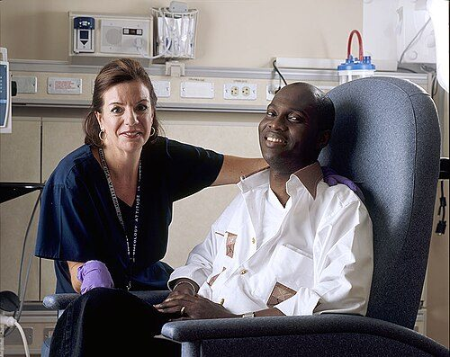

Información divulgativa. No sustituye la valoración de tu equipo médico ni sirve para decidir un tratamiento.


Los cuidados de soporte
Los cuidados de soporte son todo lo que se hace para prevenir y aliviar los síntomas del cáncer y de su tratamiento, en cualquier fase de la enfermedad, desde el diagnóstico. No son lo mismo que los cuidados del final de la vida: muchas personas los reciben mientras se tratan con intención curativa. Los cuidados paliativos son la parte de estos cuidados centrada en la enfermedad avanzada, y empezarlos pronto mejora la calidad de vida.
El dolor
Entre un tercio y la mitad de las personas con cáncer tienen dolor en algún momento, más en la enfermedad avanzada. Casi siempre se puede controlar bien.
Cómo se mide: con una escala del 0 (nada) al 10 (el peor imaginable). Decir el número ayuda al equipo a ajustar el tratamiento.
Cómo se trata: - Analgésicos según la intensidad: paracetamol y antiinflamatorios para el dolor leve; opioides (morfina, oxicodona, fentanilo, tapentadol y otros) para el moderado y el intenso. - Una pauta fija, a horas, para el dolor continuo, y un rescate para los picos. - Fármacos para el dolor por afectación de nervios (neuropático), corticoides, radioterapia sobre metástasis óseas dolorosas y, en casos seleccionados, técnicas de las unidades del dolor. - Prevenir el estreñimiento desde el primer día de opioides.
Mitos que conviene desmontar: - «La morfina es para el final»: se usa en cualquier fase en la que haga falta. - «Me voy a enganchar»: la adicción es rara cuando se usa para el dolor oncológico con control médico. Sí puede aparecer tolerancia o dependencia física, que el equipo maneja ajustando o retirando poco a poco. - «Si me quejo, me quitarán el tratamiento»: el dolor bien controlado ayuda a tolerar mejor el tratamiento.
Otros síntomas frecuentes
| Síntoma | Qué ayuda |
|---|---|
| Cansancio | El ejercicio adaptado es la medida con más pruebas; tratar la anemia, el insomnio o el hipotiroidismo si los hay |
| Náuseas y vómitos | Antieméticos antes de la quimioterapia, comidas pequeñas y frías, evitar olores fuertes |
| Falta de apetito y pérdida de peso | Comer poco y a menudo, enriquecer los platos, consultar a un dietista-nutricionista. Ver Alimentación y ejercicio |
| Estreñimiento | Líquidos, fibra si se tolera, movimiento y laxantes pautados con los opioides |
| Falta de aire | Tratar la causa, ventilador hacia la cara, técnicas de respiración, opioides a dosis bajas en la enfermedad avanzada |
| Insomnio | Rutinas de sueño, tratar el dolor y la ansiedad; terapia cognitivo-conductual para el insomnio |
| Hormigueos (neuropatía) | Avisar pronto para ajustar la dosis; protección de manos y pies, fisioterapia |
| Boca seca o llagas | Higiene suave, enjuagues sin alcohol, hidratar los labios |
Cómo pedir ayuda
Lleva un diario de síntomas con la intensidad, cuándo aparecen y qué los alivia. Pide que te deriven a la unidad de cuidados paliativos o de soporte, a la unidad del dolor, a nutrición, a fisioterapia o a psicooncología cuando lo necesites. No hace falta estar al final de la vida para recibirlos.
Ver también: Cuándo llamar a tu equipo durante el tratamiento, Efectos secundarios.
Fuentes
- Fallon M, et al. Management of cancer pain in adult patients: ESMO Clinical Practice Guidelines. Ann Oncol. 2018;29(suppl 4):iv166-iv191. doi:10.1093/annonc/mdy152
- Temel JS, et al. Early palliative care for patients with metastatic non-small-cell lung cancer. N Engl J Med. 2010;363:733-742. doi:10.1056/NEJMoa1000678
- Organización Mundial de la Salud. Cuidados paliativos. Nota descriptiva. who.int